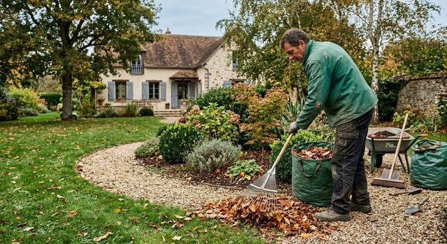

Création d'espaces verts
Massifs, pelouse et cheminements dessinés autour de la maison.

Aménagement paysager · Bazemont (78)
Les Jardins d'Alex aménagent et entretiennent jardins, terrasses et allées à Bazemont et dans ses environs.

À propos
Les Jardins d'Alex est une entreprise d'aménagement paysager dirigée par Alexandre Noc, dans les Yvelines.
Pour créer un jardin, poser une terrasse ou entretenir un espace existant, le plus simple est de décrire votre terrain et ce que vous attendez de lui.
Aménager
Jardin, terrasse, allée ou muret : chaque projet part de votre terrain et de la façon dont vous l'utilisez.
Massifs, pelouse et cheminements dessinés autour de la maison.

Lames et finitions posées sur un terrain préparé.

Pierre ou pavés pour relier la maison au jardin.

Murets, marches et soutènements en pierre.
Entretenir
De la tonte à l'élagage, un entretien régulier pour que le travail d'aménagement dure.

Entretien régulier des surfaces engazonnées.

Mise en forme des haies et clôtures végétales.

Travail en hauteur, avec corde et équipement.

Retrait des souches pour libérer le terrain.

Allées et massifs dégagés à l'automne.

Contact
Appelez ou écrivez à Alexandre Noc pour décrire votre terrain et ce que vous souhaitez en faire.